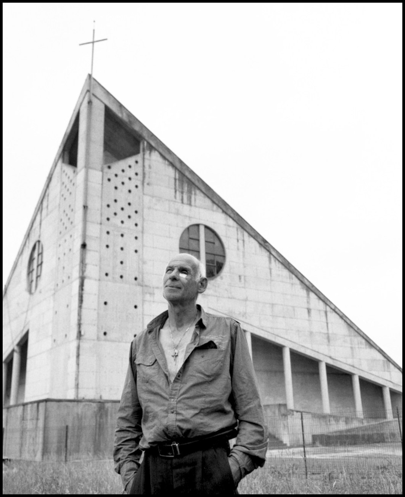
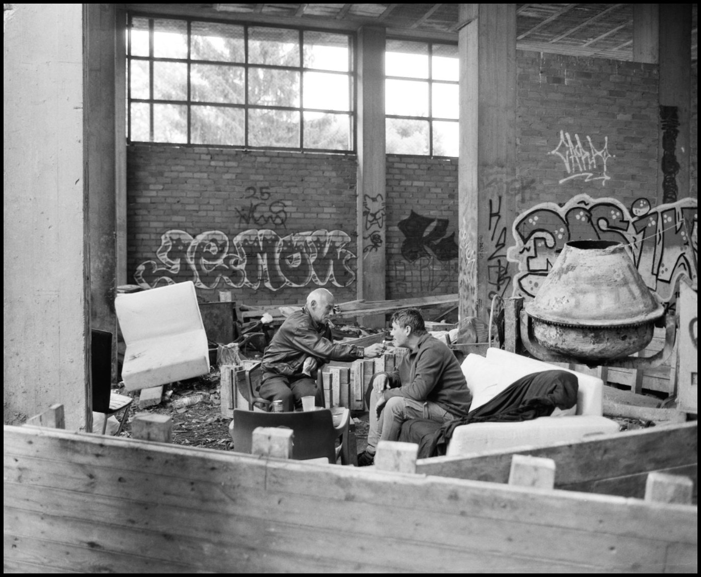
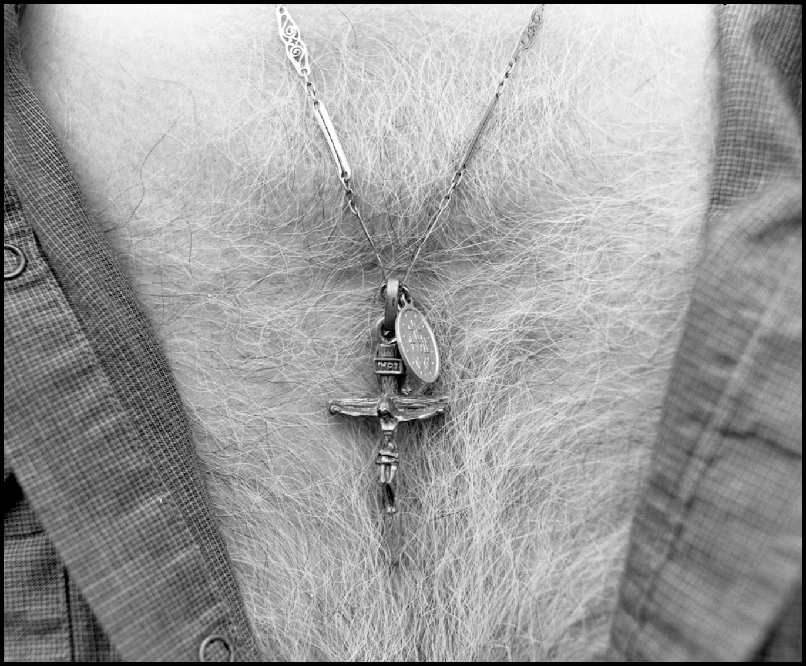
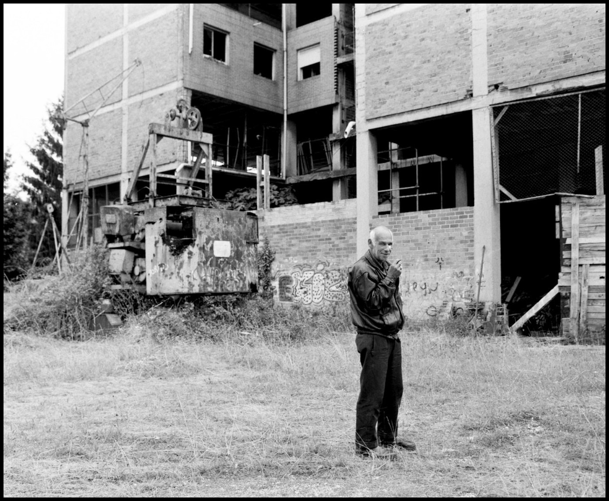
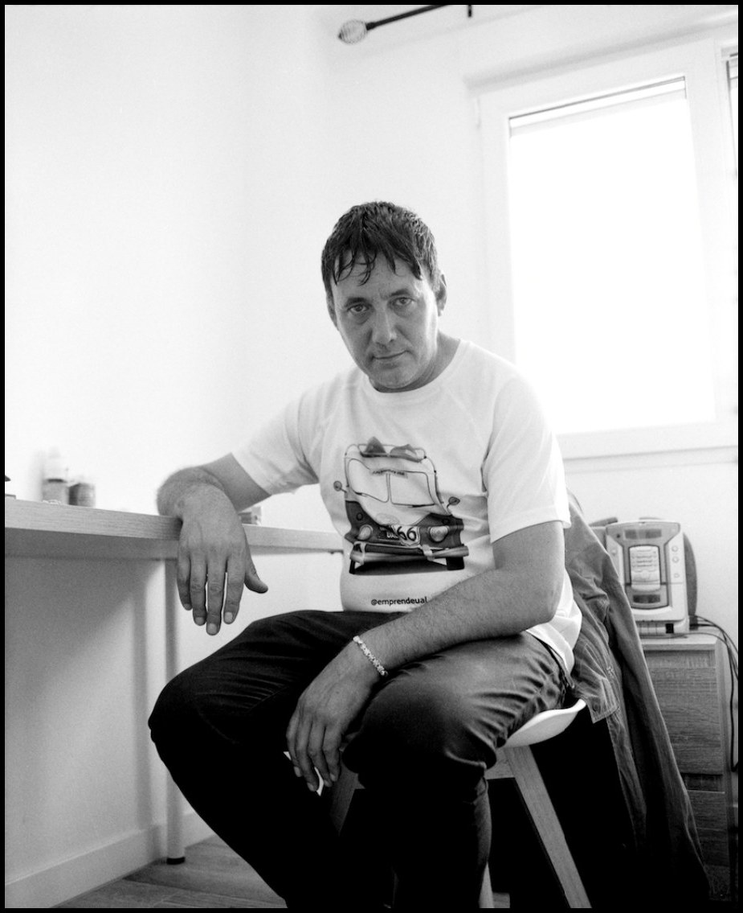
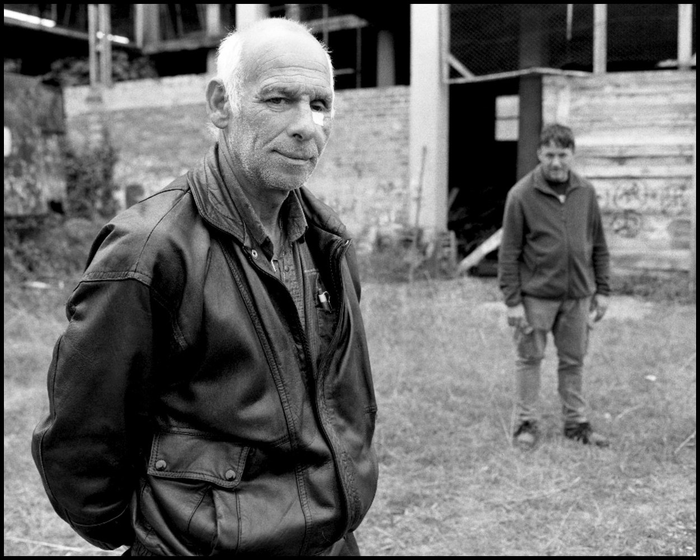
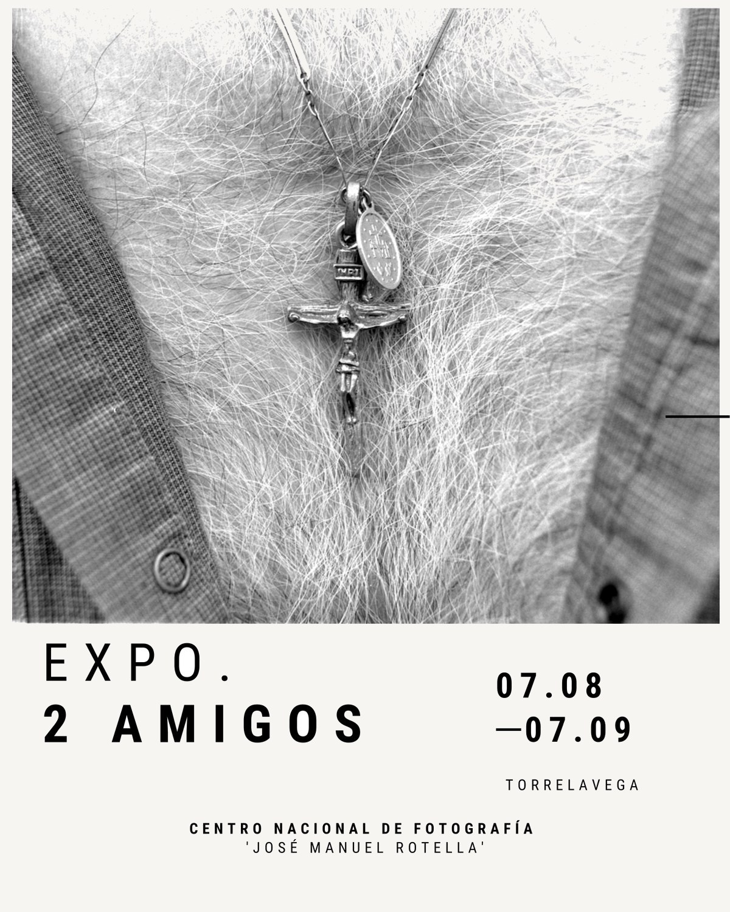
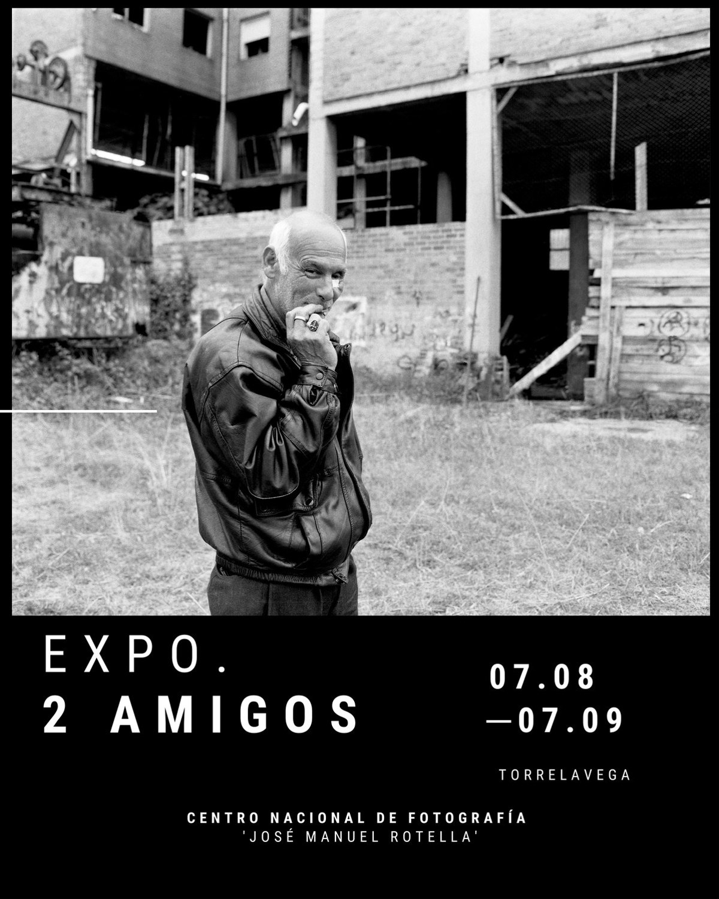

2 amigos
After travelling across the north of the peninsula, Pedro and Tino ‘el Tigre’ found shelter in the homeless hostel run by Asociación Nueva Vida in Torrelavega. A portrait of homelessness, and a tribute to friendship.

About the project
Through the Association’s mediation, Pedro now lives in a flat in the Covadonga neighbourhood and has found a job at the Town Council. Tino ‘el Tigre’ is still sleeping rough while he gets organised to fulfil his dream: starting a limousine rental business.
People experiencing homelessness often live with mental health problems, addictions and deep loneliness. Because homelessness is made invisible, those who suffer it end up isolated from society.
As well as raising awareness of this reality, 2 amigos is a tribute to friendship.




Exhibition
Centro Nacional de Fotografía ‘José Manuel Rotella’, Torrelavega. 7 August – 7 September 2026.


Presentation dossier
The full project in 20 pages: texts and photographs.
Download the dossier (PDF, 6 MB) ↓Interested in a print?
Photographs from this series are available as prints. Write to me and I will send you the sizes, paper and prices available.